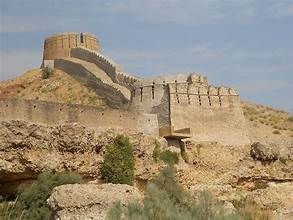
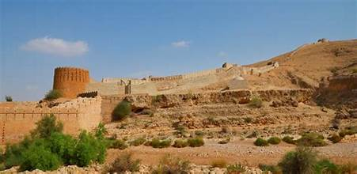

Ranikot Fort
The “Great Wall of Sindh” – one of the largest forts in the world.
The “Great Wall of Sindh” – one of the largest forts in the world.
Ranikot Fort, located in Jamshoro District, Sindh, is one of the world’s largest forts, with a circumference of approximately 32 kilometers. Often called the "Great Wall of Sindh," the fort is believed to have been originally built during the Sassanian era and later reconstructed by the Talpur dynasty in the 19th century.
The fort’s massive walls stretch across hills and valleys, making it a unique blend of natural landscape and human architecture.
Ranikot Fort is constructed primarily from stone and lime mortar. Its massive walls rise and fall with the natural contours of the Kirthar hills, covering an area so large that it is sometimes called the world’s biggest fort.
The fort has several gates, bastions, and watchtowers. Notable gates include the Sann Gate, Shah-Pere Gate, and Mohan Gate, each showcasing traditional Sindhi military design.
